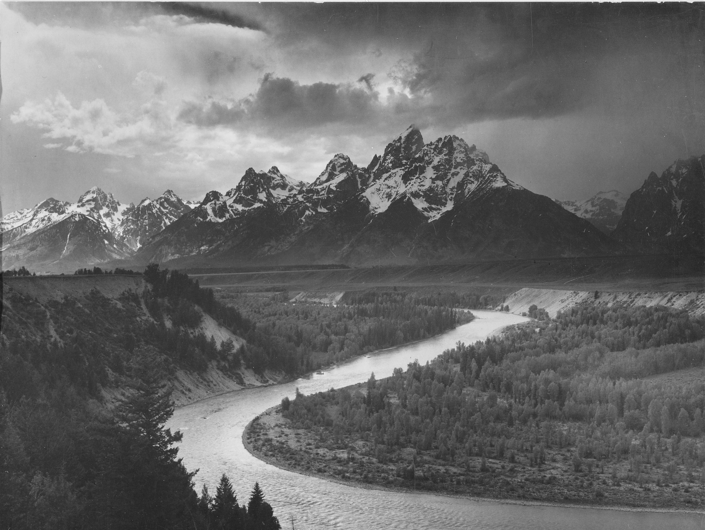
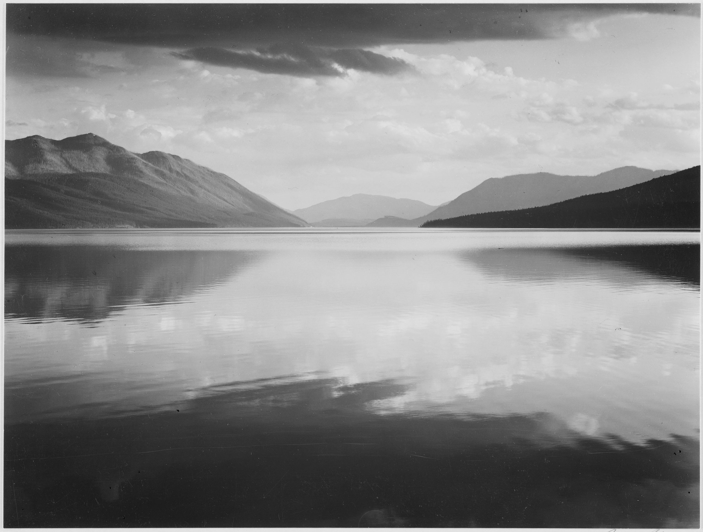
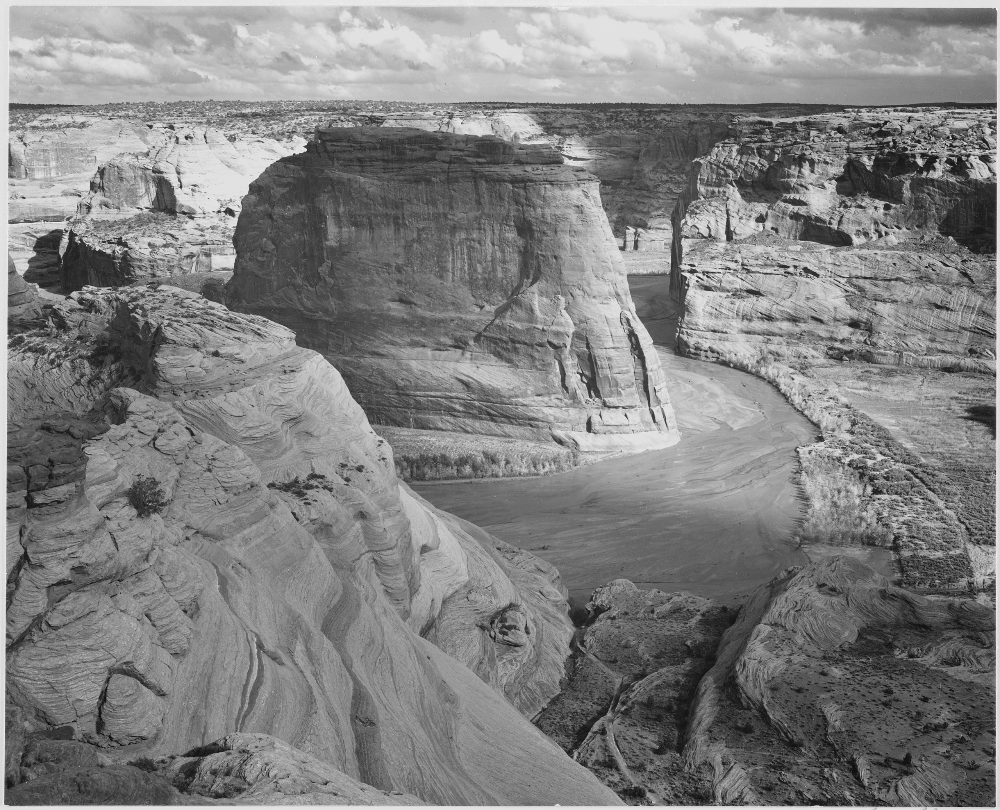
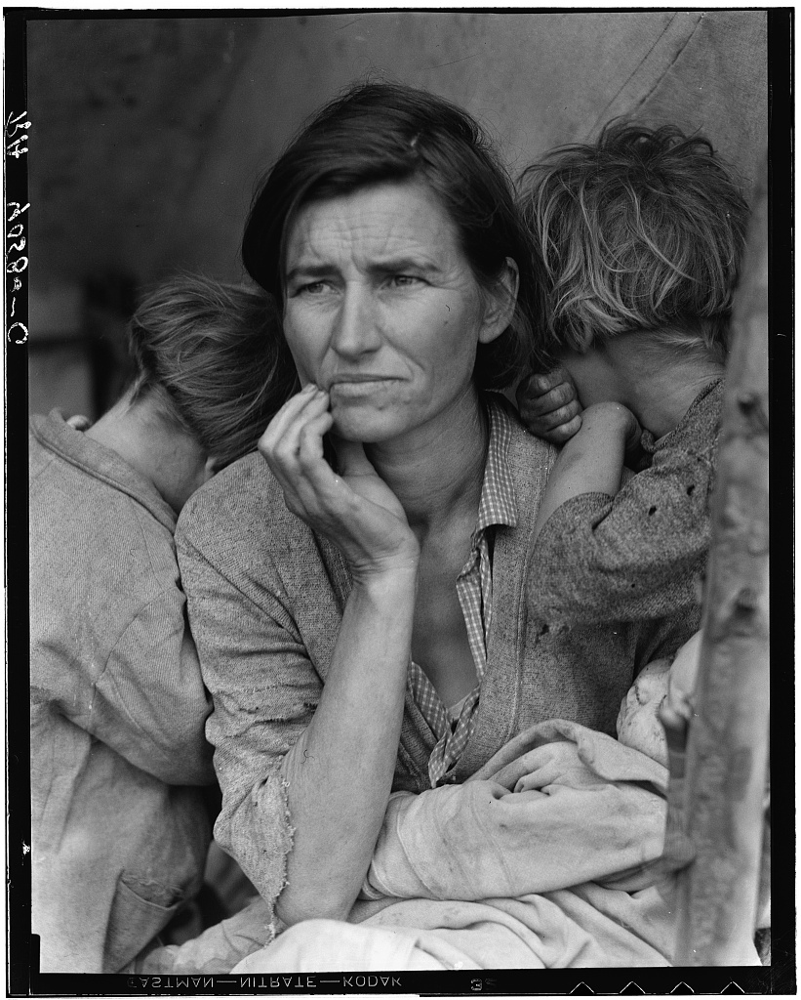
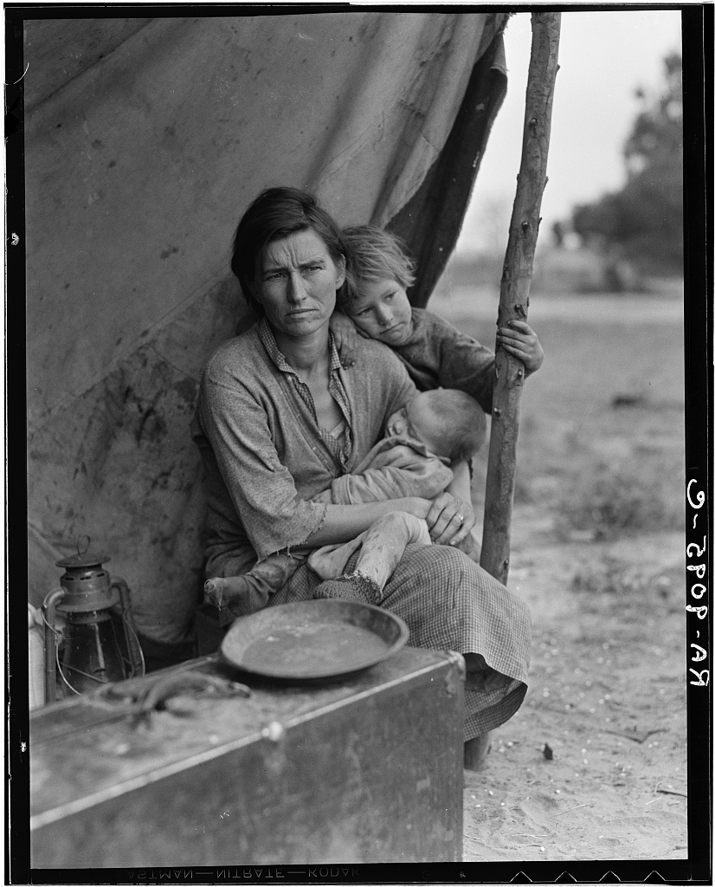
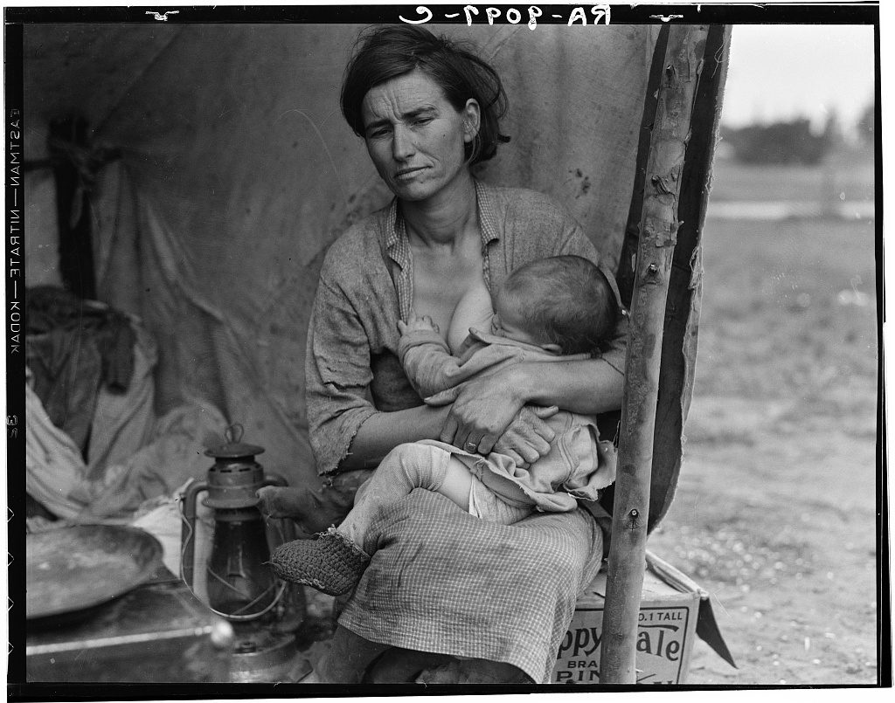

Photography in the room
Two archive collections by Ansel Adams and Dorothea Lange. The original photographs are credited to their creators and archives; they are not personal photographs by Yanbin Xu.
Ansel Adams
National parks, 1941–1942 · Archive rights statement
Public domain (NARA series 79-AA; not the restricted 79-G series).

1942 · 519904
View archive record ↗

1941 · 519861
View archive record ↗

1942 · 519852
View archive record ↗
Dorothea Lange
Migrant Mother series, 1936 · Archive rights statement
Library of Congress states that there are no known restrictions on use of the Migrant Mother images.

1936 · LC-USF34-9058-C
View archive record ↗

1936 · LC-USF34-9095
View archive record ↗

1936 · LC-USF34-9097-C
View archive record ↗
Sources and rights checked 27 October 2026. The original archive image files retain their borders and markings. NARA's public-domain series 79-AA is used here; its excluded series 79-G is not included.